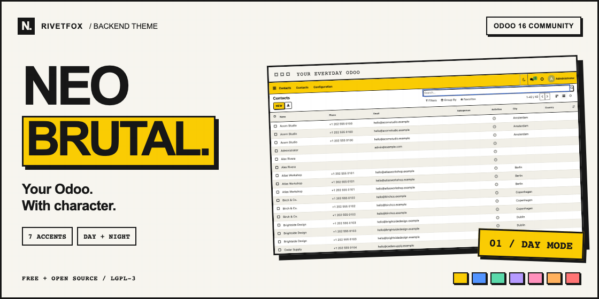
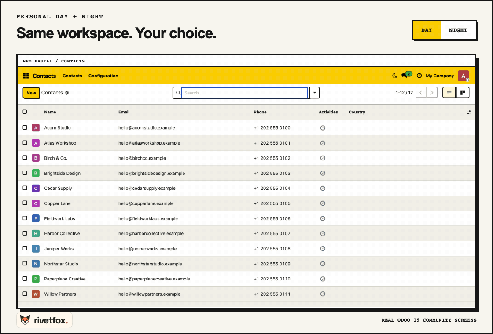
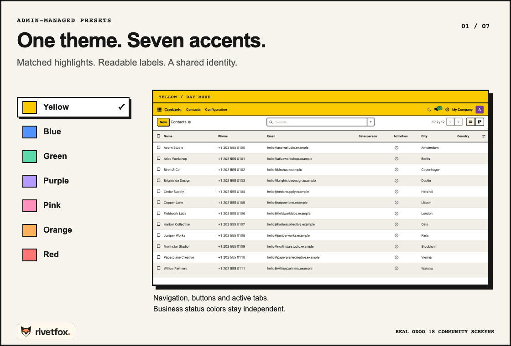
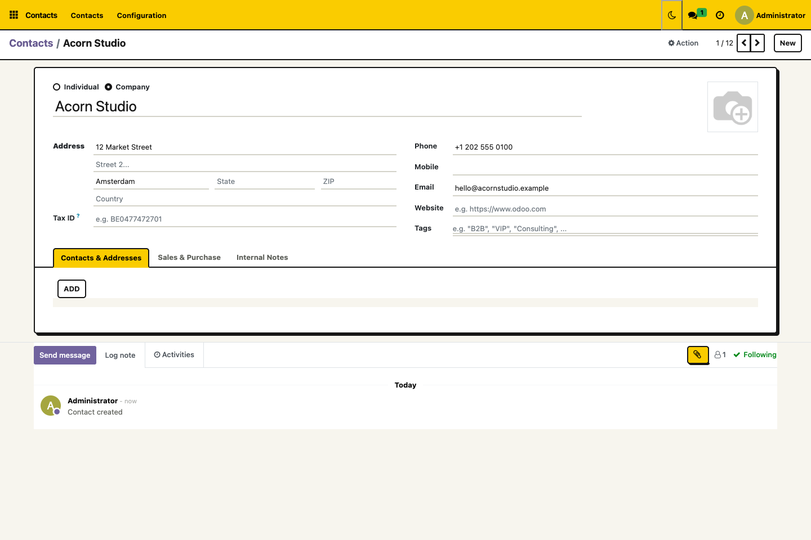
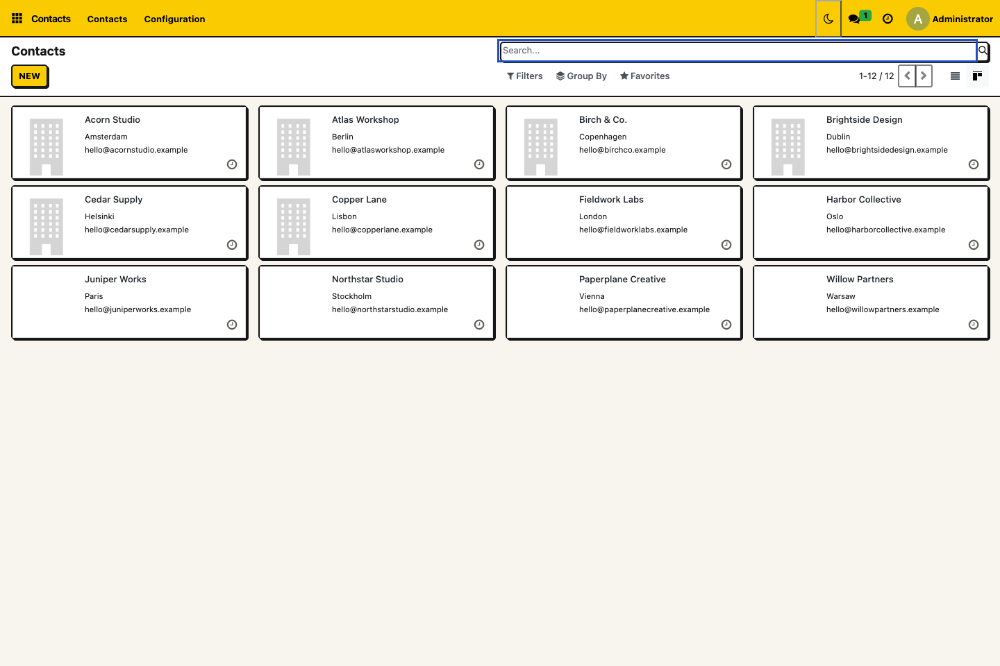
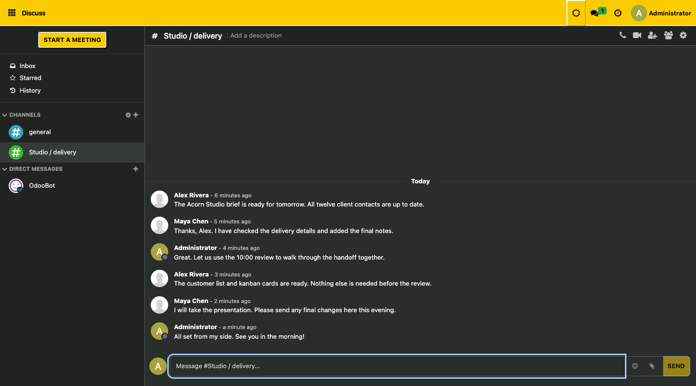
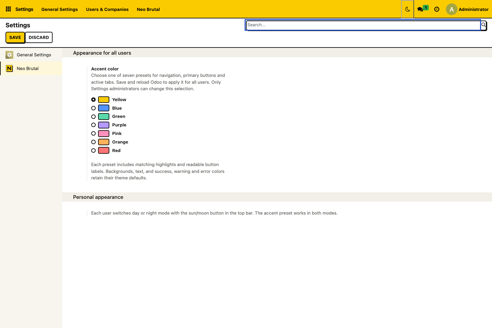
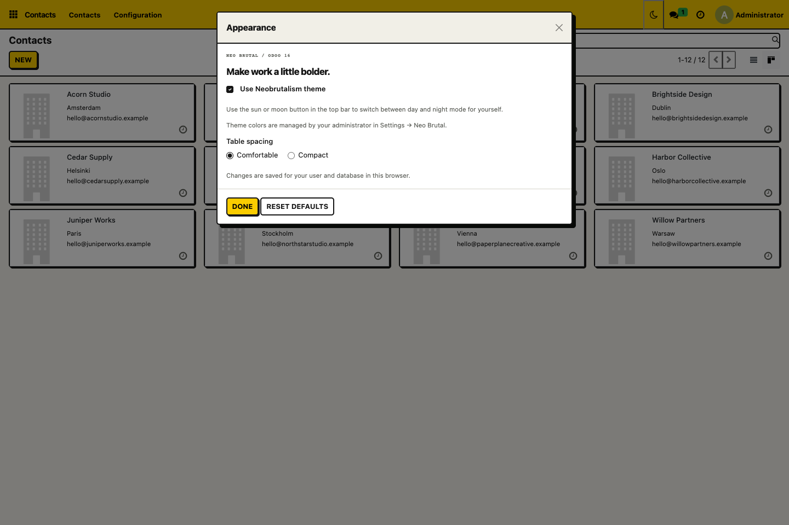

A LITTLE LESS ORDINARY.
Bold outlines, solid shadows and seven accents. A distinct look for the Odoo tools you already use, with a personal night mode for the hours after dark.
Free. Open source.
Odoo 16 Community · LGPL-3
Built by RivetFox. Runs on your server.
Seven presets, chosen by your administrator.
Day or night, one switch in the top bar.
The same records, fields and business actions.
01 / LIGHT & DARK
Switch in the top bar without reloading your open form or losing an unsent message. Your choice stays personal.

Animated comparison of real Odoo 16 Community screens. Personal preferences are saved per user and database in this browser.
02 / SEVEN ACCENTS
Yellow, Blue, Green, Purple, Pink, Orange or Red. Matching highlights and readable labels come with every preset.

Settings administrators choose the shared accent. Users receive it after reloading. Success, warning and error colors retain their own meaning.
03 / THE EVERYDAY DETAILS
Clear form sections. Outlined kanban cards. Readable conversations after dark.

Distinct sheets and tabs keep your familiar fields in place.

Strong outlines and solid shadows give each record its own space.

Dark surfaces across Discuss, its sidebar and message composer.
04 / SIMPLE CONTROLS

Settings > Neo Brutal: choose one shared preset. Save, then reload Odoo.

Avatar > Appearance: adjust table spacing or turn the theme off for yourself. Use the top-bar sun/moon for day or night.
Tested on self-hosted Odoo 16 Community: Contacts, Discuss, Calendar, CRM, Project and standard graph/pivot views. Dependencies: web and base_setup.
Backend only. Websites, portals, POS, login pages and PDF reports are outside its scope. Odoo Online cannot install this add-on. Enterprise screens, Odoo.sh deployment and third-party themes have not been verified.
Shared accents stay in your database. Personal mode and spacing stay in your browser, separately for each user and database. They do not sync between devices.
No external fonts, CDNs, telemetry or activation keys. Disable the theme in Appearance for yourself, or uninstall it from Apps for everyone.
NEO BRUTAL / RIVETFOX
Real Odoo 16 Community screens with fictional records. Optional apps and demo records are not installed by the theme. LGPL-3.0-or-later; license and design attribution included.